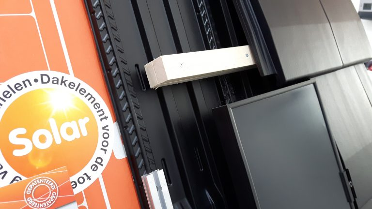

Slimfix Solar dakelement van Isobouw
Met SlimFix(XT) Solar introduceert IsoBouw het eerste dakelement dat volledig is afgestemd op de hoge eisen die gesteld worden aan de toepassing van zonnepanelen.
SlimFix(XT) Solar elementen bieden een waterkerend “zonnepaneel-platform” waarop direct alle gangbare zonnepanelen kunnen worden bevestigd.
Geschikt voor alle gangbare zonnepaneelsystemen
Perfecte ventilatie en koeling van het zonnepaneel = hoog rendement
Snel en voordelig een waterdicht dak t.b.v. indak-systemen (BiPV).
Gegarandeerde ventilatie van de onderconstructie = langere levensduur.
Handhaving van een dampopen dakconstructie.
Geschikt voor nieuwbouw (SlimFixXT Solar) en renovatie (SlimFix Solar).
Het enige dakelement geschikt voor alle zonnepanelen
SlimFix(XT) Solar is uniek voor de toepassing van zonnepanelen. De vormgeving van het SlimFix(XT) Solar element is dusdanig dat er naast de waterafvoerende functie altijd een goede ventilatie en koeling van de zonnepanelen en de dakpanelen wordt gerealiseerd. Dit garandeert de levensduur van de dakconstructie en verhoogt het rendement van de zonnepanelen.Met SlimFix(XT) Solar kan de aannemer/dakdekker nu eenvoudig en snel al het voorbereidingswerk verrichten voor de latere plaatsing van de zonnepanelen door de installateur. In de tussentijd is het dak met SlimFix(XT) Solar waterdicht! Daar waar geen zonnepanelen komen kan eenvoudig gecombineerd worden met de SlimFix(XT) dakelementen. Een dak met gedeeltelijk zonnepanelen en pannenbedekking? Ook dat is geen probleem met SlimFix(XT) Solar.
Toepassingsgebied
Dakisolatie
Platdakisolatie IKO EnerthermGeluid
Binnenwandsysteem HV70 Van FaayEco-Baffles Van VRK
Geluidisolatie Isolgomma Van Imbema
Gevel
BuitenisolatiegevelHoutvezelisolatie Van Gutex
Isolatie Isovlas PL Plaat
Spouwisolatie HR++ Neopixels EPS Parels
Glas
Glasfolie van HomechillHR++ Isolatieglas
Renovatieglas en Kozijnen
Vloer
Bodem afsluiting KalkkorrelsReflectiefolie Tonzon